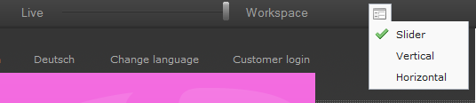

Bug #11539
Split view
| Status: | Resolved | Start date: | 2010-12-17 | |
|---|---|---|---|---|
| Priority: | Should have | Due date: | ||
| Assigned To: | Steffen Kamper | % Done: | 0% |
|
| Category: | Workspaces | Spent time: | - | |
| Target version: | - | |||
| TYPO3 Version: | Is Regression: | |||
| PHP Version: | Sprint Focus: | |||
| Complexity: |
Description
I don't know whether this is "by design" or a bug:
Is it really not possible anymore to view the workspace version and the live version of a page together? for me it's just possible to see the top area of the workspace version and the bottom area of the live version but I want to see the same area from both pages.
11539.patch
 (3 kB)
(3 kB)
comparison_view_ff36_mac.png (162.9 kB)
{kind=link}
11539-wsPreviewHeightFix.patch
(2.4 kB)
11539v2.patch
(8.6 kB)
11539v3.patch
(13.9 kB)
example.PNG (10.1 kB)
{kind=link}
11539v4.patch
(13.7 kB)
11539-tooltipstyles.patch
(554 Bytes)
11539-initsizecalc.patch
(788 Bytes)
Related issues
Associated revisions
Fixed bug #11539: Split view
git-svn-id: https://svn.typo3.org/TYPO3v4/CoreProjects/workspaces/workspaces/trunk@3909 743128fe-103e-dd11-99c4-001b210b3e58
History
#1 Updated by Tolleiv Nietsch over 4 years ago
- Status changed from New to Accepted
Agreed - maybe we should have a fallback - not sure we're able to include it in 4.5
#2 Updated by Susanne Moog over 4 years ago
HCI issue: http://forge.typo3.org/issues/11540
#3 Updated by Sonja Schubert over 4 years ago
- Target version set to 4.5 RC1
#4 Updated by Tolleiv Nietsch over 4 years ago
- File 11539.patch added
11539.patch is a work-in-progress patch but shows that it's possible ;)
#5 Updated by Francois Suter over 4 years ago
- File comparison_view_ff36_mac.png added
I don't know if it's the right place to report this, but the new comparison view does not occupy the full viewport on Firefox 3.6 for Mac. See attached screenshot. Refreshing or resizing the window does not change anything.
#6 Updated by Tolleiv Nietsch over 4 years ago
Thanks for bringing that up - yes, that happens on all platforms if there's an JS-Error within the Preview-IFrames (and the callback doesn't work)...
#7 Updated by Tolleiv Nietsch over 4 years ago
- File 11539-wsPreviewHeightFix.patch added
an additional patch to have crossbrowser compatible height-fix for the iframe is attached - this might be needed for review purposes of this issue but will be part of a different issue once we're sure that future splitview and this patch work well together
#8 Updated by Ernesto Baschny over 4 years ago
Hi Tolleiv and team. The attached patch (11539-wsPreviewHeightFix.patch) seems to solve the issue with the limited height we have been experienced (Francois, can you confirm?). The height is now the whole content, as expected.
Thanks!
#9 Updated by Björn Pedersen over 4 years ago
The patch is working here ( FF3.6/Linux)
#10 Updated by Ernesto Baschny over 4 years ago
The issue was also reported on http://bugs.typo3.org/view.php?id=17009
#11 Updated by Tolleiv Nietsch over 4 years ago
- File 11539v2.patch added
v2 improves the split view, the mode switcher is a proper toolbar/menu now. Only problem - due to an ExtJS foo which stole me already more than 20hrs of work without resolution the layout construction of the "slider" panels breaks and therefore the panels aren't resized to full size as expected. Steffen promised to have an ExtJS expert available for that.
11539-wsPreviewHeightFix.patch is still valid
#12 Updated by Tolleiv Nietsch over 4 years ago
- Assigned To set to Steffen Kamper
#13 Updated by Tolleiv Nietsch over 4 years ago
- File 11539v3.patch added
v3 is pretty close to what we want and at least works in Chrome and Firefox. In Safari and Opera the Toolbar-Icon is missing and IE ... well IE ;)
#14 Updated by Tolleiv Nietsch over 4 years ago
- File example.PNG added
 <- that's what you should get.
#16 Updated by Susanne Moog over 4 years ago
Just tested the patches. In general +1, I've got one small issue when I switch frequently between horizontal and vertical orientation I sometimes get a blank screen until I change the window height in Chrome and in Firefox (but that could again be just me ;))
#17 Updated by Tolleiv Nietsch over 4 years ago
- Status changed from Accepted to Resolved
As discussed in Skype committed v4 to trunk (rev. 3909) just to have something is RC1
#18 Updated by Tolleiv Nietsch over 4 years ago
- File 11539-tooltipstyles.patch added
Followup committed to trunk (rev. 3940)
#19 Updated by Tolleiv Nietsch over 4 years ago
- File 11539-initsizecalc.patch added
Followup committed to trunk (rev. 3941)
#20 Updated by Michael Stucki over 1 year ago
- Category set to Workspaces
#21 Updated by Michael Stucki over 1 year ago
- Project changed from Workspaces & Versioning to Core
- Category changed from Workspaces to Workspaces
- Target version deleted (
4.5 RC1)